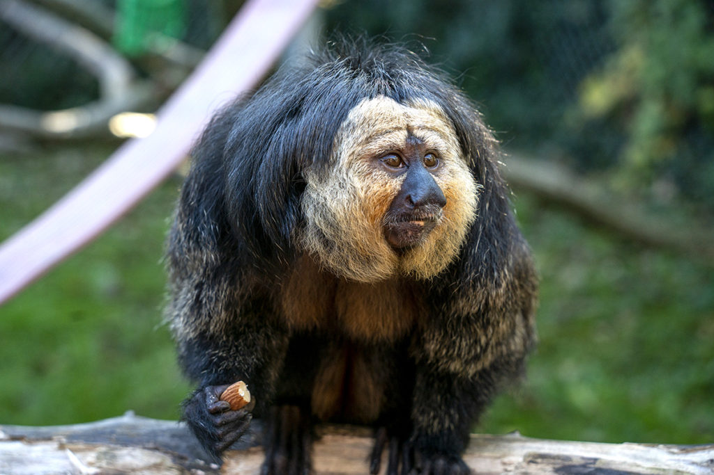
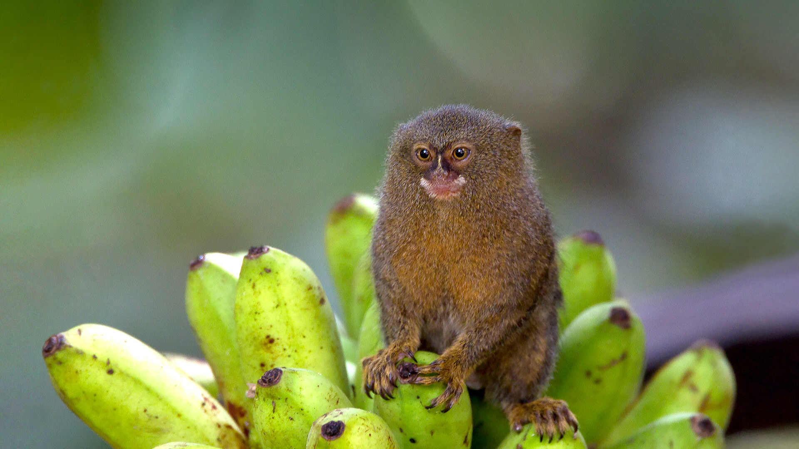
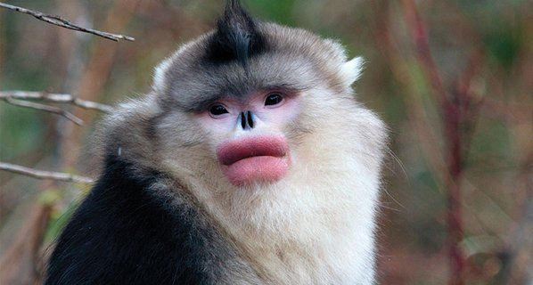
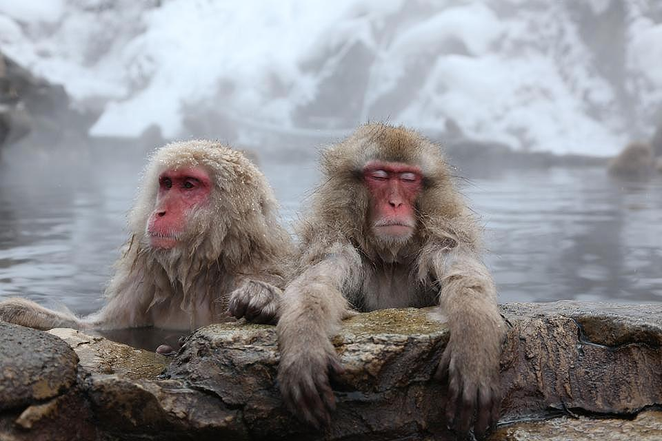

Primates Are F*cking Awesome. I Love How They Are Miniature Versions of Us Humans. Here Are a Few of My Favorites, I Hope You Enjoy!

The proboscis monkey is a quirky primate found only on the island of Borneo in Southeast Asia, living in mangrove forests and along rivers. Known for their huge potbellies and excellent swimming skills, these monkeys are even born with webbed feet! But what really sets them apart is the male’s absurdly large, droopy nose. It looks completely ridiculous, and that’s exactly why I like them.

The white-faced saki is a small monkey from the rainforests of northern South America, especially in countries like Brazil, Venezuela, and Guyana. They spend most of their time high up in the trees, munching on fruits, seeds, and the occasional insect. Males have a white face that makes them look wise beyond their years—and frankly, they just seem super chill. I think pulling up to a party with one would be pretty cool.

The emperor tamarin is a small primate native to the southwestern Amazon Basin, primarily in parts of Peru, Brazil, and Bolivia. It lives in tropical rainforests and is known for its agility in the treetops, where it feeds on fruits, insects, tree sap, and small animals. This species is easily recognized by the long, white facial hair found on both males and females. They look like they would whisper some solid advice softly in your ear.

The pygmy marmoset is the smallest monkey in the world, also native to the rainforests of the western Amazon Basin, including parts of Brazil, Colombia, Ecuador, Peru, and Bolivia. Weighing just around 100 grams, it lives high in the forest canopy and primarily feeds on tree sap, gum, and small insects. Despite its tiny size, it’s an agile and vocal primate. Imagine having this little thing running around your house...

The black-and-white snub-nosed monkey is an endangered primate found in the mountainous forests of southwestern China, particularly in Yunnan, Sichuan, and Tibet. Adapted to cold, high-altitude environments, it lives in large social groups and feeds on lichens, leaves, fruits, and bark. Its most distinctive feature is its upturned, flat nose, which may help reduce frostbite. They look like they got a little too much lip filler, but I honestly dig it.

The Japanese macaque, also known as the snow monkey (sounds better imo), is native to Japan and is the northernmost-living non-human primate. It inhabits a range of environments, from subtropical forests to snowy mountains, and is highly adaptable. These monkeys are known for their complex social behavior and famously soak in hot springs during winter to stay warm. Anyone want to join them in the hot springs?